Fresh repairs: ten references
All 10 pass SOLO48 and full QA with no errors or warnings.
house power - PASS
95e78717-28bd-4a88-951a-54d6ae9c18e6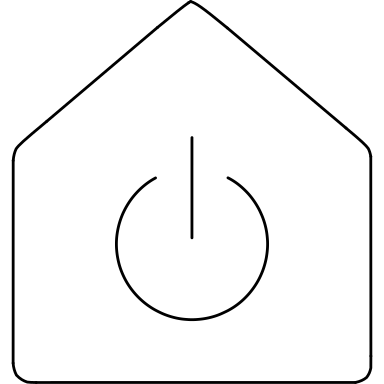
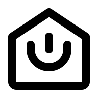
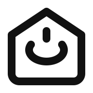
SQUARE preserves a balanced house with centered power control.
An open continuous curved ring replaces the squared-off U ends; the centered stem and rounded lower house corners have clear spacing. The ring is slightly flattened to fit below the roof.
Omissions: No defining features omitted.
house and power originals; power atomic-debug informs a continuous open ring.
SVG · Python · Result · QA
smart watch square euro sign - PASS
ac5e07e4-9e24-406e-8500-ef19796d1933VRECT_L gives the euro a full-height square watch face.
Restored the missing single-bar euro. Paired strap extensions are integrated into the outer contour, with matching rounded case corners.
Omissions: The source strap/face dividing rails are omitted; short outlined top and bottom extensions preserve the wristwatch silhouette.
watch original and atomic-debug: paired straps and central face; source supplies single-bar euro.
SVG · Python · Result · QA
device wearable vr goggles - PASS
b855886b-3199-52ae-a327-5e124680a94dHRECT_M is the shallowest permitted horizontal keyshape.
Widened the visor from 32 to 36 centerline units. Matched radius-10 ends and smooth mirrored nose curves remove the old block-like corners.
Omissions: Hollow side straps become short solid tabs. The visor is taller relative to its width than the source because of the prescribed keyshape.
glasses original and atomic-debug: paired curves and bilateral balance.
SVG · Python · Result · QA
apple whole - PASS
00524635-8904-4470-bdab-b1b3bd2a41f0VRECT_L reserves height for both apple and distinct leaf.
Restored the leaf with an open pointed oval, kept a connecting stem, and rebuilt the apple with smooth upper and lower dimples instead of angular bottom joints.
Omissions: No defining features omitted; the body is shortened to reserve leaf and stem clearance.
apple original and atomic-debug: organic paired lobes and shallow bottom dimple.
SVG · Python · Result · QA
door left hand closed - PASS
f3bcb648-33a4-4112-a9ca-00bcdf092bab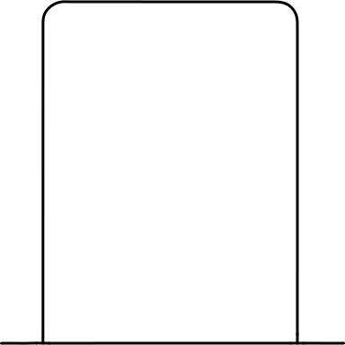
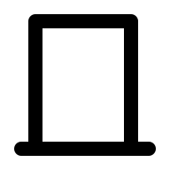
VRECT_L restores the tall source proportions.
Symmetric door sides, equal rounded upper corners and a centered threshold replace the square, slightly uneven old frame.
Omissions: No omissions. No handle added because the reference is blank.
door-closed original and atomic-debug: rounded upper corners, upright sides and level threshold.
SVG · Python · Result · QA
battery - PASS
e3172eb9-da83-4f83-a7f8-416647bd23e6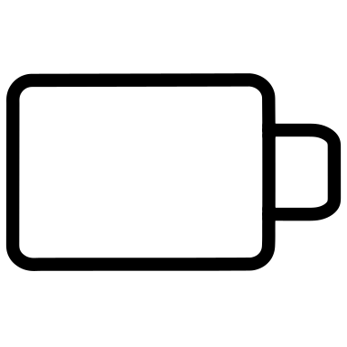
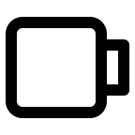
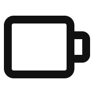
HRECT_M makes the battery more horizontal than the old HRECT_L drawing.
The empty cell has matched small-radius corners and a smaller rounded right terminal. Both terminal joins are real connections to the cell.
Omissions: No omissions.
battery original and atomic-debug: simple cell silhouette; source owns attached terminal.
SVG · Python · Result · QA
woman nurse - PASS
e365094b-61bd-5f0a-a1d1-1a7c9525470b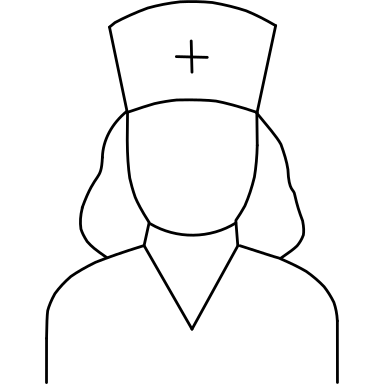
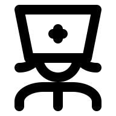
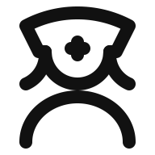
VRECT_L fits the cap, circular jaw, hair and shoulders in one upright silhouette.
The cap is shorter and gently domed, the circular jaw grows from radius 8 to 10, and the shoulders are larger and smoother. Jaw bottom y26 and shoulder top y30 give zero visible ink gap with a direct scoped contact, as required for avatars.
Omissions: Hat/face dividing seam, collar seams and fastening are omitted to avoid crowded enclosed spaces. The cross sits near the lower cap edge.
human_ref/user.svg and user-round original/atomic-debug: circular jaw and smooth shoulders.
SVG · Python · Result · QA
airship - PASS
94ee19fa-6c64-4340-9c2b-4d23bc7e3842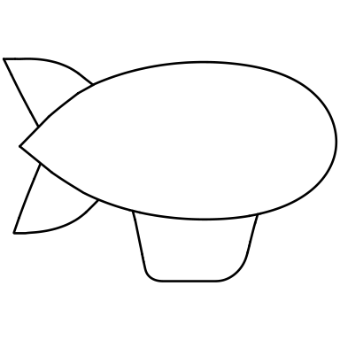
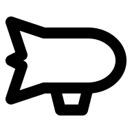
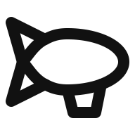
HRECT_L preserves the long airship silhouette.
Restored a rounded balloon envelope with a pointed rear, two distinct triangular fins and an attached gondola below the forward half. The fins are no longer fused into a rocket-like silhouette.
Omissions: No defining parts omitted. Gondola moved forward slightly to clear the lower tail fin. Directional asymmetry is intentional.
No useful local Lucide airship match; supplied reference owns pointed tail and rounded balloon proportions.
SVG · Python · Result · QA
hospital 1 - PASS
d9212b2f-353c-4ae0-96bd-8e2bf060245f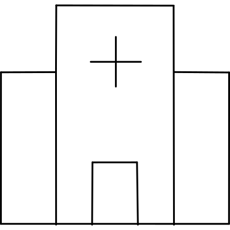
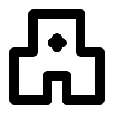
HRECT_L provides enough width for a legible medical cross and two lower wings.
The cross arms are larger, both side-wing divisions are restored, and the central doorway is retained. Equal wing widths and a shared center axis control all details.
Omissions: No defining parts omitted. Overall building is wider and lower than the source to preserve cross clearance.
hospital original and atomic-debug: cross, side blocks and central entry.
SVG · Python · Result · QA
lte - PASS
1e4774df-ef53-5eda-941a-67a7eac299a4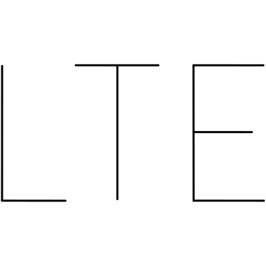
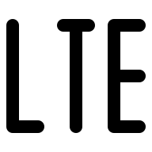
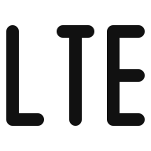
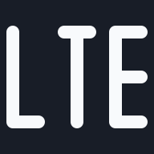
HRECT_M gives the lettering a shorter, less stretched profile.
All three letters share top y10, baseline y38, 8-unit widths and 8-unit gaps. The height is reduced from the previous 32 units to 28 while retaining the source letter forms.
Omissions: No omissions. This is custom SOLO48 lettering, not typeface v2.
No useful Lucide letter-set match; supplied LTE reference determines the three letters.
SVG · Python · Result · QA